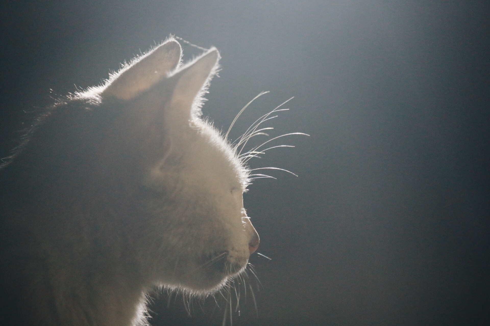
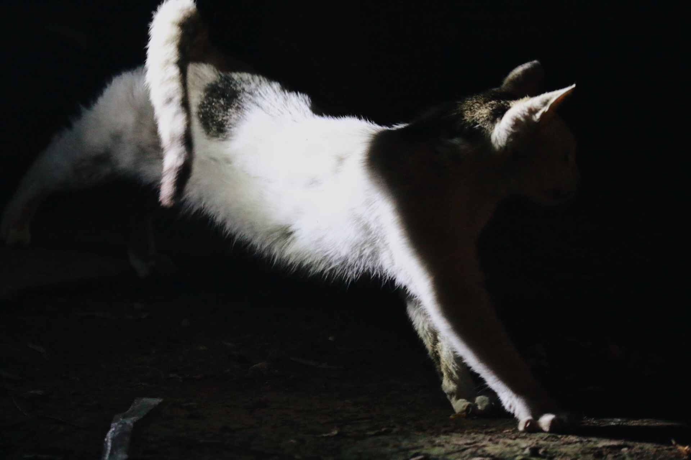
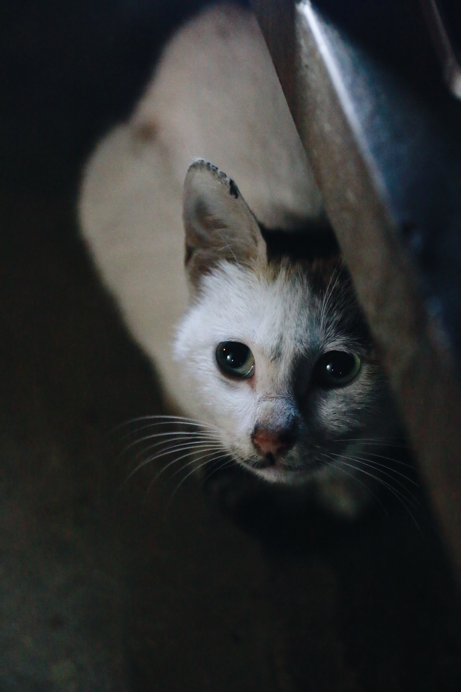
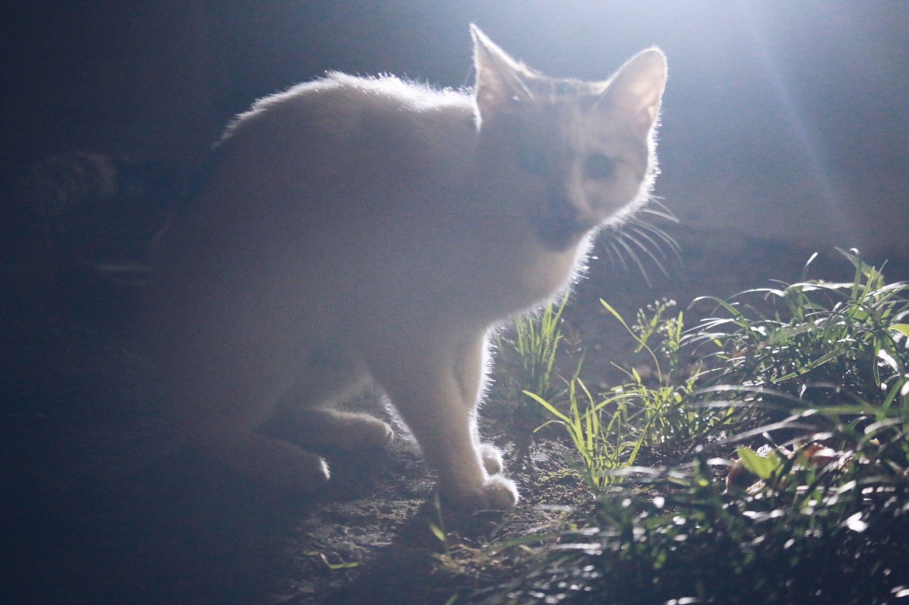
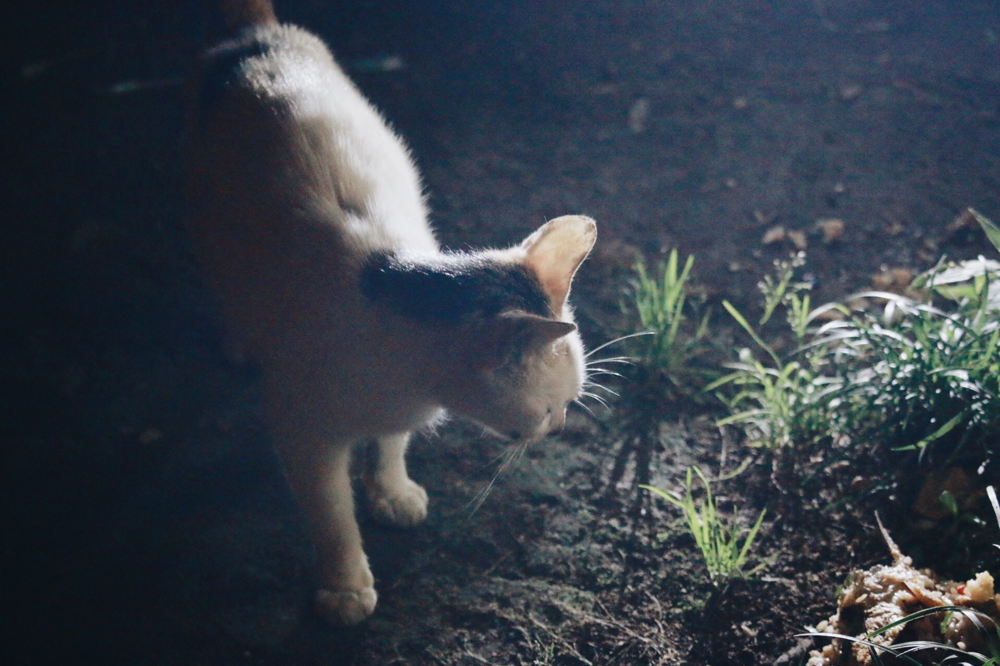
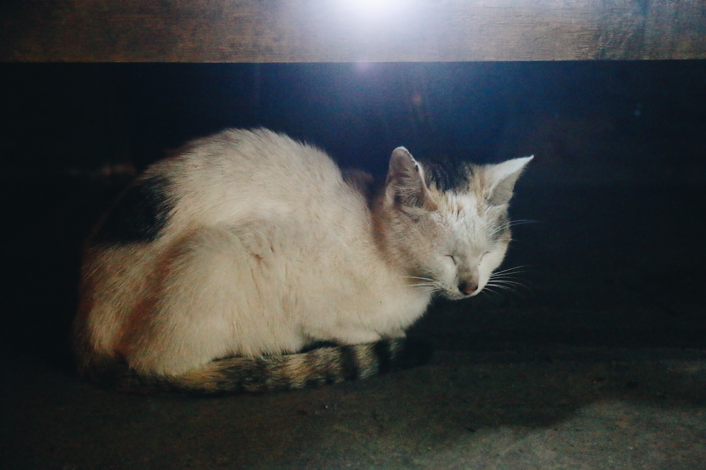
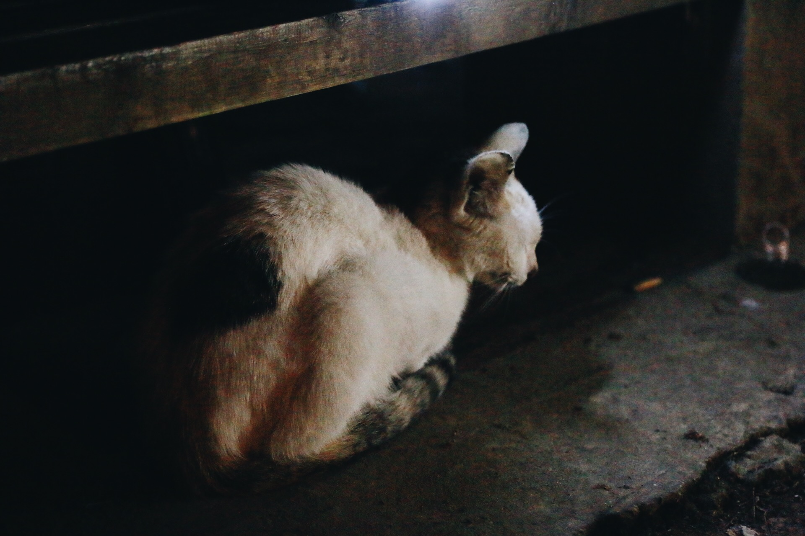
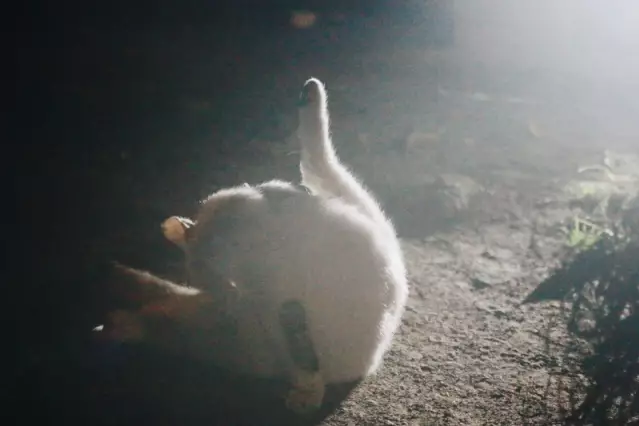
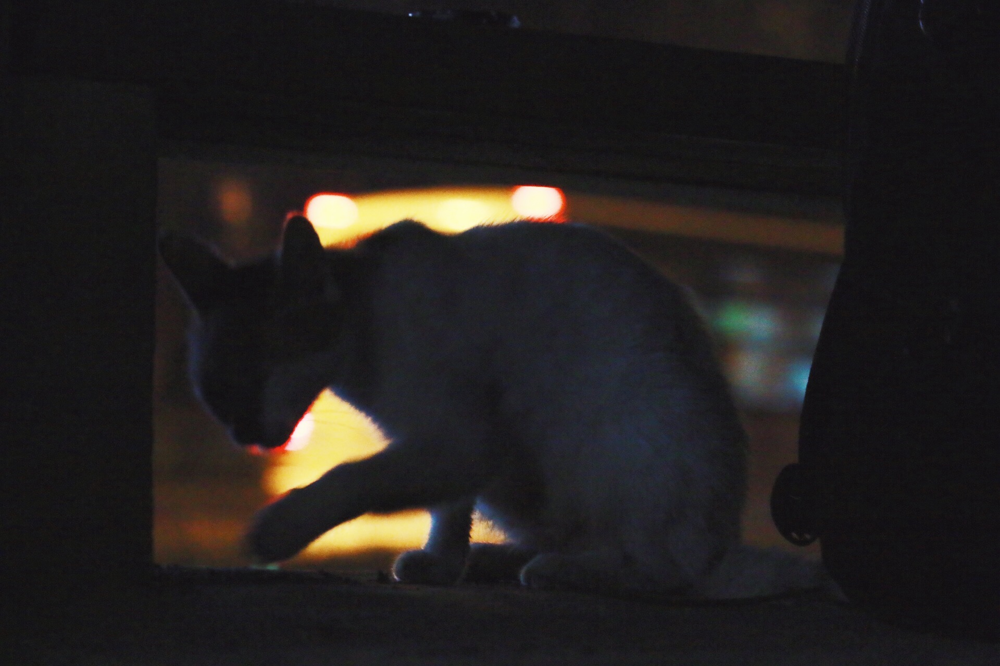

“去找白猫的时候，她蜷在木头长凳下的角落里，缩着脖子，眯着眼睛，像极冬天穿的大棉拖鞋，只在我们拍照时斜斜觑一眼，并不睬人。”

时令虽已是初夏，夜里风还有些凉，白猫吃剩的鱼罐头散发腥气，传得很远，引来一只虎斑猫在树影下探头探脑。虎斑试探着猫步，更近了。白猫似是不可忍，起身伸了懒腰，像最柔软的舞蹈演员一样，踢着小碎步过去吃了两口，抬头“嘶”一声。

对面的不速之客像心中有愧，又像怕羞似的，惊起而奔走。桂园路夜里常有工程运输车往来，车灯晃眼得很。虎斑很快蹿进一片强光，几乎殒命卡车轮下。猫呆楞片刻，几步逃进桂四后面的小树林，不见了。

说这只桂园领主白猫，大约摸是在去年秋天生的吧。第一次见她时还很小只，走路摇摇摆摆的，精瘦，尖嘴猴腮，显得耳朵大而尖，有几分精灵模样。
说瘦猫不讨人欢喜，也不尽然。只要手上拿着东西，或是多看她几眼，小小白就巴巴地晃着碎步跟牢，用萌萌的奶音尖细地叫，见你站定就坐下，可怜兮兮地抬头睁圆了眼看你，像仰望什么大人物一样。
就算你骗她，假装手里有小鱼干把她拐来，欣然受用几声喵喵奶音，她虽知道是假也从不恼，绕着你脚转几圈，尾巴抬得高高的、战栗着，仿佛很激动你的到来。
动物与人，幼时情态总是纯真如诗。

那会儿附近还有几只模样相近的小白猫的，只是不常现身。一次认错猫，看见背影像，喵的一回头，眼神冷淡，全然不似。许是来拜访的同胞兄弟姊妹吧？每一只猫，就算是单色的，往细了看，面部神情也不同。它们都有不同的性格。胆大胆小，喜动喜静，或枭勇善侵略，或只钟情静静思考猫生。

对了，你见过猫打太极吗？
我见过两小只幼时打闹模样，除蹲下伏击，猫拳左勾右勾，还有类似太极推手动作，在追逐嬉闹时被追得烦了，停顿转身就是一个太极推手。两对猫爪肉垫子拍拍对方，互换追逐身份，状若幼时玩的贴膏药游戏。小白猫还有一样超能力——她会飞。这无疑是一名杀手，刺客，忍者。
桂园附近游荡着一只大黑狗，带领一众狗小弟，成群结队觅食，当然包括抢猫的吃食。一次见黑狗白猫，对峙。白猫本静静蹲伏，倏地惊起，在树干上触了一下，直接短暂滑翔，飞在大黑狗面门前，喵拳喵腿一番，遂退敌，护食成功。
下过薄霜的时候，会看到小小的一排脚印。跟狗走过的杂乱不同，她走过的脚印整整齐齐的，后一脚踏在前一脚脚印上，像最精妙的舞蹈演员，心里不乐意糟践一块白净的霜，分外珍惜的样子。冬日里她不爱下地，地气凉吧，在长凳上拿尾巴盖住后爪，或是前爪作出农民揣的模样。
有人在长凳坐下，就钻进长大衣垂下围成的毡房里，发出阿嚏阿嚏的喷嚏声。还好她的出生和生育不在冬天，那几乎是挨不过死亡的。那段时间，经常看到林子里摆着一两个纸板箱，箱子里垫着毛绒绒的织物，不知道是哪个好心的小姐姐送给猫的房子。可惜猫似乎不太爱去。

我想她一定是学校里最有学识最懂得人情世故的猫了——听过学生们的课业辩驳，听过许多对未来的迷茫，听过老武汉的家长里短，也听过一些恋人间的絮语。
傍晚时分，学生们端着饭盒在林间长凳上野餐，讨论下午课堂上的问题；九十点钟下了晚课，桂园宿舍区去吃樱顶煎饺、小推车馄饨的，会坐在这里；家属区的老姐妹俩在猫边上用武汉话唠家常，老大爷裤带上别着收音机听戏文咿呀。还有人，独个儿坐在长凳上打王者荣耀，白猫就跳上来在边上张望，仿佛对召唤师峡谷也深有了解。
四月份，下猫崽前几礼拜，白猫的肚子很大了。大概是饿极，她讨食也会跑去计院实验室门口，等待放课的男孩子女孩子们。有一回给她带猫粮去，白猫只舔舔鼻子，打个喷嚏，走开了。旁边逗弄它的两个女孩子心满意足地笑道，刚喂了一大把粮，再吃不动。

白猫以往蹲守在桂四对面有木头长凳的林子里，四月二十来号，下了她的第一窝小猫，行动轨迹较以往更难摸一些。朋友想跟踪她回窝，找到小猫所在，无奈猫的反侦察能力超群，绕了一大圈甩掉跟踪尾巴。听家里老人说过，母猫最怕生人见小猫崽，要是有人碰了小猫，她就吃掉自己的后代，只剩个头骨。不知传说真假，猫总归是隐秘的、独立的小动物。

今年，白猫好像大了成熟了许多，不过一年不到的时间。猫体一侧有一道长长的伤痕，新长的白绒毛盖不住粉红色的新肉。小时候空手骗猫的手段，再行不通。她吃够了就蹲着不再理人，没吃饱就跟以前一样缠着人，只是叫声略微嘶哑。
她被谁撸毛都舒服地侧过脑袋，或者直接躺倒碰瓷，眯着眼睛呼噜呼噜一脸受用的样子。不摸她了她又重新舔毛梳理好久，玻璃珠眼里充满嗔怪似的，斜斜瞥你，默念：又有傻X乱我发型。任谁都可以摸脑袋揉下巴，不再像小时候那么审慎地保持安全距离，给摸是特权优待，值得欣喜雀跃。
我以为我是她的好朋友，可她对谁都俯首绕膝；我以为常去见她她就会记住我，可她对每个人都一样，跟所有人亲密就是跟所有人都不亲密。
朋友宿舍也曾养过一只小白猫，叫Saber，听闻春天来了越狱追逐自由，再没回来过。Saber吃剩的猫粮，他们宿舍固定地放在走廊里，会有猫食客来吃。后来那些粮吃完，宿舍不再买新的喂那常来的食客。那小猫日日在窗外喵喵叫，没出三天嗓子便哑了，只发出残破的、不再甜美的叫唤。再过几天，叫哑的小猫就再不来了。我有些怕它吃惯猫粮，忘记觅食技能，饿死在外。朋友说，不用担心，猫自己会去翻垃圾桶觅食的，也不用念及情分，猫是很独立很无情的动物。

今夜白猫吃饱，不愿理人。喂她的是一个住在附近的阿姨，拎着大的红色无纺布袋，里面装剩菜拌剩饭。她挑拣残渣里的鲫鱼，丢在长凳旁树根下，向我们介绍：鲫鱼下奶，白猫太瘦，崽崽吃不饱，是故几日来特地投喂鲫鱼。我问，这样大一袋都是猫粮吗，阿姨答，大部分是骨头跟剩饭，拿来喂学校里的流浪狗的，前段时间保卫部打过一次，流浪狗数量少了一少。
想想也是，很久没见过去年欺负小白猫被pia飞的大黑狗了。
这大半年，我了解了猫的生活。猫习性自由，萌态是尽力满足人的需求。小白猫渐渐长成深谙处世之道的大猫，所有的苦与难藏在心里，身上淡淡疤痕会被新被毛盖住却也不曾消失，见人时猫脸上永远是甜蜜的微笑，轻轻柔柔地叫。
她什么都懂，有疤痕的老猫，再怎么舔毛都有点儿发灰的野猫，要自己生存下去，真难啊。即将离开珞珈，有时候忽然又有些担心他们。一窝又一窝，一代又一代，猫诞育的家族传奇，就像《百年孤独》当中布恩迪亚家族的兴衰起落。
我在想，几年后回学校，回江城的时候，是否还能在珞珈山下，在街头巷尾，遇见桂园白猫的曾孙后代。我幻想相遇的情景，猫看看我，我看看猫，猫不叫，我也不蹲下为它停留，只是静静对视一眼便错身而过，相忘江湖。
怀念那些珞珈的猫儿，怀念那些时光。
非常非常怀念，那些孤独又不孤单的日子。
也谢谢读完这个平淡故事的你。
(文字：师竹 摄影：江海 编辑：凌乐)